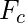
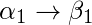
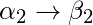
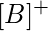

Whenever a user updates the database, the system must check whether any of the functional dependencies are getting violated in this process. If there is a violation of dependencies in the new database state, the system must roll back. Working with a huge set of functional dependencies can cause unnecessary added computational time. This is where the canonical cover comes into play.
A canonical cover of a set of functional dependencies F is a simplified set of functional dependencies that has the same closure as the original set F.
Important definitions:
Extraneous attributes: An attribute of a functional dependency is said to be extraneous if we can remove it without changing the closure of the set of functional dependencies.
Canonical cover: A canonical cover  of a set of functional dependencies F such that ALL the following properties are satisfied:
- F logically implies all dependencies in .
- logically implies all dependencies in F.
- No functional dependency in contains an extraneous attribute.
- Each left side of a functional dependency in is unique. That is, there are no two dependencies  and  in such that
 .
.
Finding Canonical Cover
Algorithm to compute canonical cover of set F:
repeat
1. Use the union rule to replace any dependencies in
and  with
with  .
2. Find a functional dependency
.
2. Find a functional dependency  with an
extraneous attribute either in
with an
extraneous attribute either in  or in
or in  .
3. If an extraneous attribute is found, delete it from .
until F does not change
.
3. If an extraneous attribute is found, delete it from .
until F does not change
Example1:
Consider the following set F of functional dependencies:
F= {
A  BC
BC
B C
A B
AB C
}
Steps to find canonical cover:
- There are two functional dependencies with the same set of attributes on the left:
A BC
A B
These two can be combined to get
A BC.Now, the revised set F becomes:
F= {
A BC
B C
AB C
} - There is an extraneous attribute in AB C because even after removing AB C from the set F, we get the same closures. This is because B C is already a part of F.
Now, the revised set F becomes:
F= {
A BC
B C
} - C is an extraneous attribute in A BC, also A B is logically implied by A B and B C (by transitivity).
F= {
A B
B C
} - After this step, F does not change anymore. So,
Hence the required canonical cover is,
= {
A B
B C
}
Example2:
Consider another set F of functional dependencies:
F={
A BC
CD E
B D
E A
}
- The left side of each functional dependency in F is unique.
- None of the attributes in the left or right side of any functional dependency is extraneous (Checked by applying definition of extraneous attributes on every functional dependency).
- Hence, the canonical cover is equal to F.
Note: There can be more than one canonical cover of a set F of functional dependencies.
How to check whether a set of f.d.’s F canonically cover another set of f.d.’s G?
Consider the following two sets of functional dependencies:
F = {
A B
AB C
D AC
D E
}
G = {
D BC
D AB
}
Now, we are required to find out whether one of these f.d.’s canonically covers the other set of f.d.’s. This means, we need to find out whether F canonically covers G, G canonically covers F, or none of the two canonically cover the other.
To find out, we follow the following steps:
- Create a singleton right hand side. This means, the attributes to the right side of the f.d. arrow should all be singleton.
The functional dependency D AC gets broken down into two functional dependencies, D A and D C.
F = {
A B
AB C
D A
D C
D E
} - Remove all extraneous attributes.
Consider any functional dependency XY
Z. If X in itself can determine Z, then the attribute Y is extraneous and can be removed. As we can see, the occurrence of extraneous attributes is possible only in those functional dependencies where there are more than one attributes in the LHS. So, consider the functional dependency AB
C.
Now, we must find the closures of A and B to find whether any of these is extraneous.![[A]^{+}](../../../imgs/db/4b8548729a7ee2e59bd009717dd4eae7.jpg "Rendered by QuickLaTeX.com") =AB
=AB
=BAs we can see, B can be determined from A. This means we can remove B from the functional dependency AB
C.F = {
A B
A C
D A
D C
D E
} - Remove all redundant functional dependencies.
Check all f.d.’s one by one, and see if by removing a f.d. X
Y, we can still find out Y from X by some other f.d. A more formal way to state this is find ![[X]^{+}](../../../imgs/db/aeaba0713016a566bb47214f088dd115.jpg "Rendered by QuickLaTeX.com") without making use of the f.d. we are testing and check whether Y is a part of the closure. If yes, then the f.d. is redundant.
without making use of the f.d. we are testing and check whether Y is a part of the closure. If yes, then the f.d. is redundant.Here, when checking for the f.d. D
C, we observe that even after hiding it, the closure of D contains C. This is because we can obtain C from D by the combination of two other f.d.’s D A and A C. So, C is redundant.F = {
A B
A C
D A
D E
}
Now, do the same for G.
- Create a singleton right hand side. This means, the attributes to the right side of the f.d. arrow should all be singleton.
G = {
A B
A C
D A
D B
} - Remove all extraneous attributes.
Since the RHS of all f.d.’s contains only 1 attribute, there is no extraneous attribute possible. - Remove all redundant functional dependencies.
By looping over all f.d.’s and checking the closure of the LHS in all cases, we observe that the f.d. D
B is redundant as it can be obtained through a combination of 2 other f.d.’s, D A and A B.G = {
A B
A C
D A
}
Now, since all f.d.’s of G are already covered in F, we conclude that F covers G.